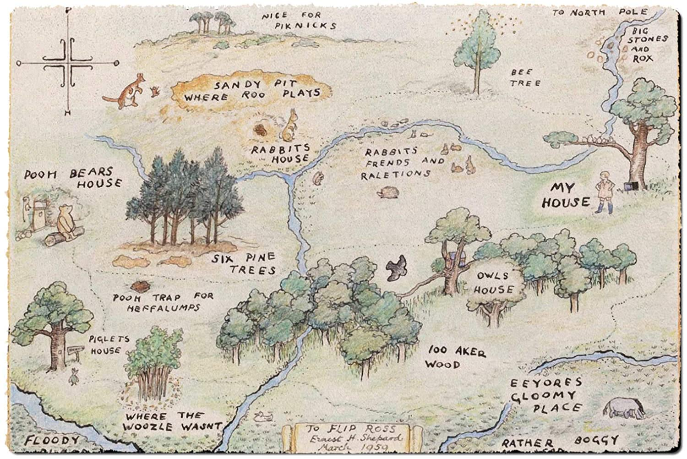

Here are two of my favorite quotes from Winnie the Pooh
“You’re braver than you believe, stronger than you seem and smarter than you think.”
- Christopher Robin
“People say nothing is impossible, but I do nothing everyday”
- Winnie the Pooh
Enjoy